A股保卫战

没有子弹，也要呐喊
相信习李，现在就是底！

我爱我的祖国
可谁爱我呀！
疯牛已死，快熊出没


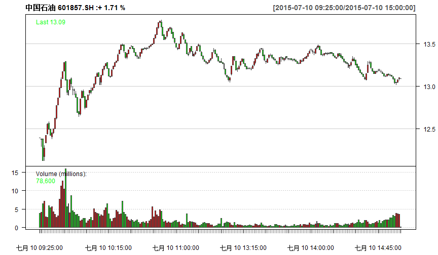

WTF？

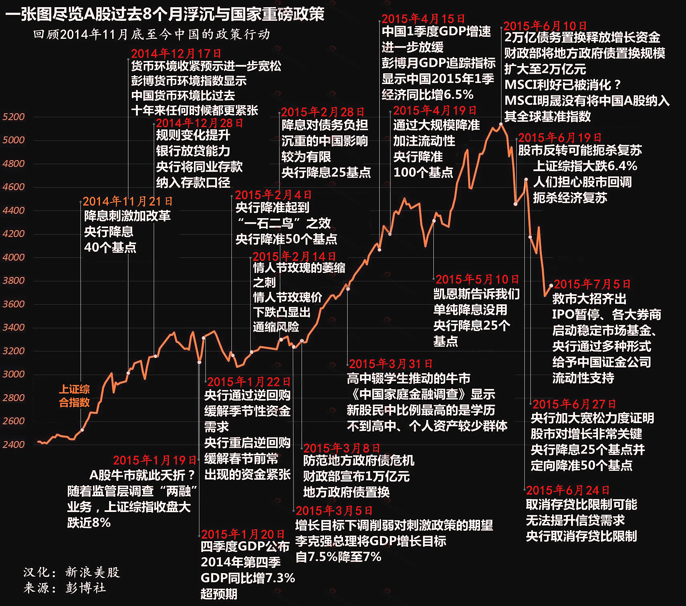
市场失灵与政府失灵
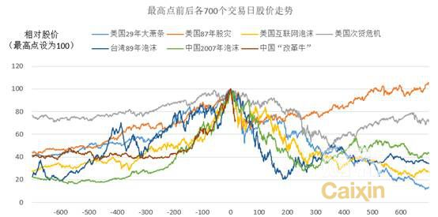
流动性陷阱
不能承受的增长之痛
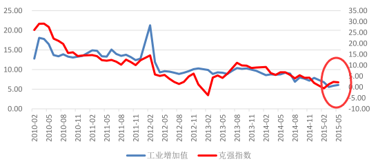
货币的流动性陷阱

楼市强，股市弱
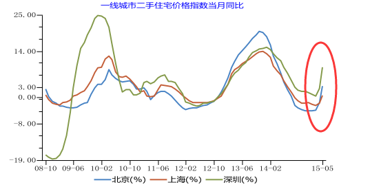
囚徒困境
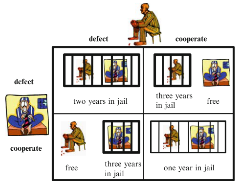
启示录
NASDAQ

故地，却不重游
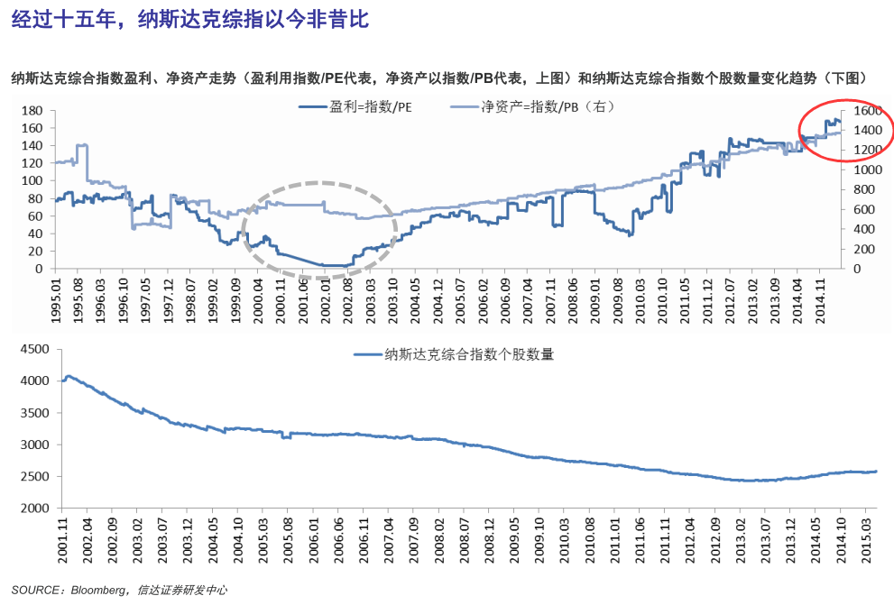
台湾牛
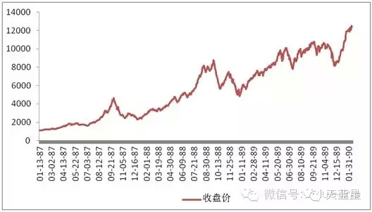
历史的镜子
“台湾牛”的八大特征
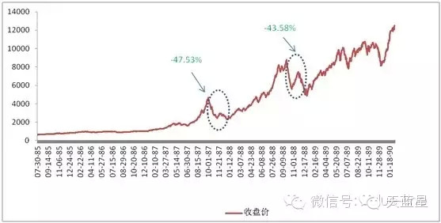
市场热衷于追逐小股票
- 很多没有内在投资价值的股票遭到爆炒
- 壳公司
- 市值足够小
- 可流通股数量足够少
- 有故事以及有“幸运的名字”的公司
- “新奇毛纺”：Jan.(7`), Mar.(22/25)
- “易航”：破船, (1.76 -> 200)
- “六福发展”：破旧酒店 + 野生动物园
- 小盘股在这样的市场中更容易被操纵
- 这种背景下,绩优蓝筹股难以跑赢大盘
政府背书，市场不会下跌
- 国民党将股市繁荣当作竞选口号
- 选举口号就是“丰厚的利润、伟大的繁荣”
- 政府对市场监管投鼠忌器
- 本利得税导致市场大跌：投资者包围“财政部”
- 政府随后很快取消了之前征收资本利得税的方案
散户主导,交易额迅速攀升
- 赚钱效应快速吸引越来越多的人参与台湾股市
- 60万
- 500万
- 换手率骤增
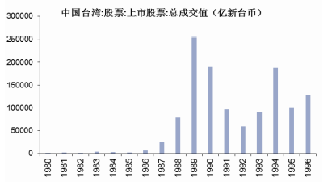
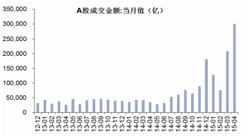
券商监管放松
- 1988 年后台湾地区券商准入放开,券商数量爆发
- 28
- 197
- 金融创新
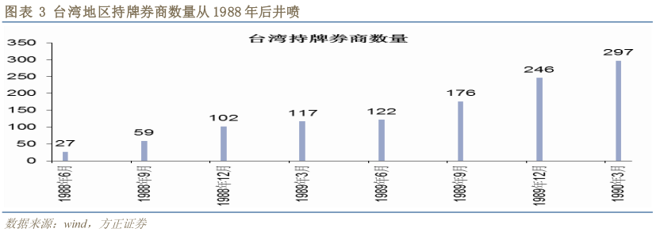
泡沫期的高市盈率
- 泡沫时期台湾地区股市整体市盈率达到 100 倍
- 中国国际商业银行（ICBC）
- 摩根大通
- 美洲银行
- 第一银行公司
- 富国银行
- 美联银行
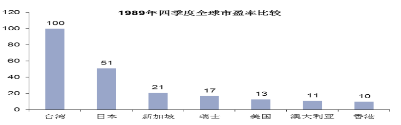
大量的地下钱庄集资,保证金交易盛行
- 由“金融天才”经营的月息 4% 的地下钱庄盛行
- 配资业务
- 完整资金链
新股上市的低价发行承销
- 由证券交易委员会确定,而非市场决定
- 新股发行往往超额认购
5%的涨跌幅限制,助长泡沫而非降低风险
- 过度的价格限制
- 导致市场进一步恐慌
牛市从来不是一帆风顺
三次回头
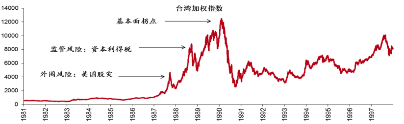
侠之大者，为国接盘
- 12000
- 2485
- 90s台湾地区经济转型成功, GDP 增速逐渐企稳
- 产业升级、出口增速稳定
- 成功的产业升级+ 新的市场
- 高附加值和科技密集型方向转移
让子弹再飞一会
坚信习李！
弹药充足：
- 【改革牛】实为国家崛起的意志：经济调结构、宏观稳增长、企业促发展
- 中国资本市场对外开放和人民币国际化进程：中德国际交易所、大陆与香港两地基金互认
- 居民资产的重新配置：上周证券保证金净流入5652亿元
- 中国资本市场未来三到五年时间，都会处于上升周期
- 战略：大胆入市，小心配置
三季度：大+小
- “跟随龙头策略”：，在“泡沫”阶段往往是龙头的轮涨，一个龙头倒下了，新的龙头又会起来
- 去年12月主升浪：航空、券商、一带一路、南北车龙头切换
- 年初至今：传媒、医疗、新能源汽车、军工、软件、乐视网等龙头的切换
- 二季度大蓝筹+低价小市值同时看好
- 大：建议关注那些估值还未充分修复的行业（银行、金融、有色）
- 小：关注那些需求和供给同时扩张、最符合产业转型方向的行业（医疗服务、互联网传媒、软件、电子、环保）。
- 当下半年大盘股估值修复结束后，小盘股可能出现“最后的疯狂”
孔雀東南飛
金顧中心

投资简单的事
- 89
- 11
- = 100
- 49
- 11
- = 60
- 12.359550561
- 22.448979591
最遥远的距离


最遥远的距离
- 沪股通上涨58%
- 港股通仅5%
- 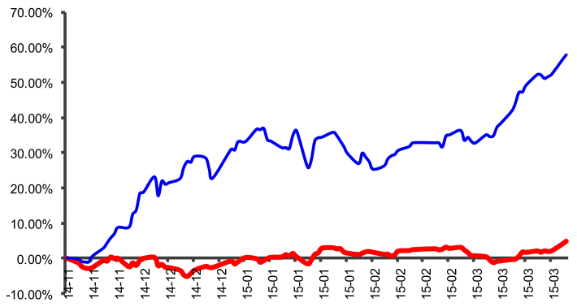
香港最便宜
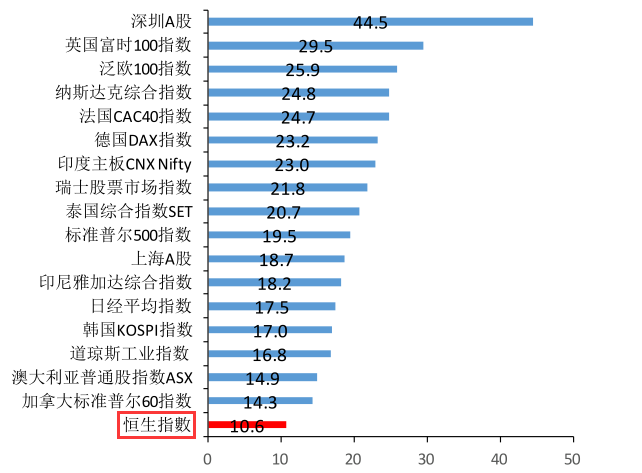
行业前向市盈率对比

行业前向市净率对比
港A化

港A化

孔雀東南飛
- 香港作为全球估值洼地的吸引力不断上升
- 公募基金和险资开放，资金南下趋势明显
- 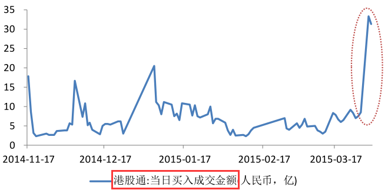
北水南调
近期沪股通连续净抛售

港股通则持续净买入
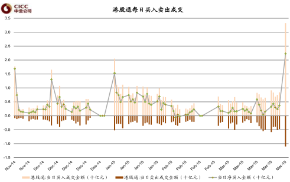下一站，香港


港股通投资策略
几类优质公司有望获得新资金关注
- 沪港通范围内，市值在 200 亿以下的低估值公司；
- H 股明显折价的 A+H 类公司；
- 在沪港通范围外，但具有 A 股认可概念的小市值公司。
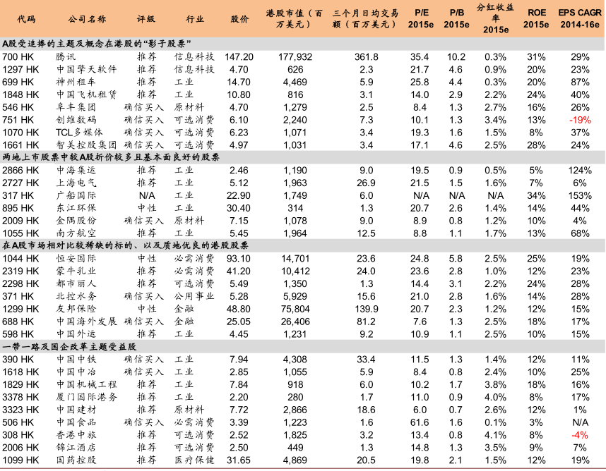

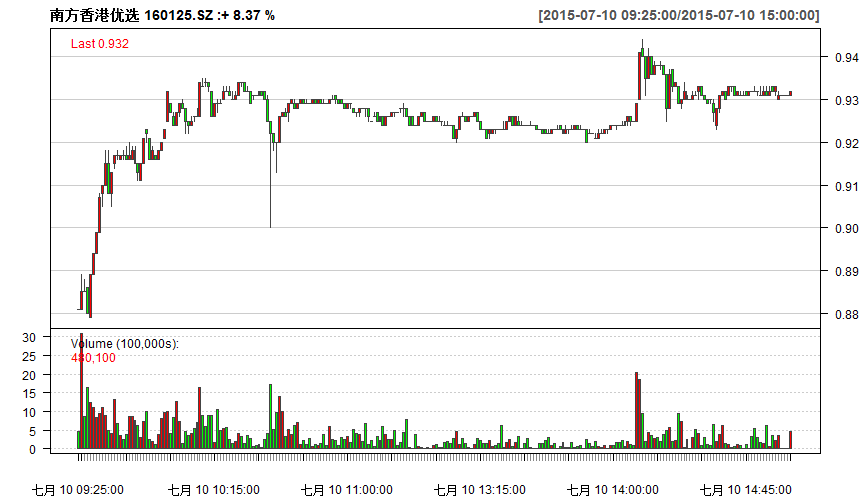

金港快线
金顧中心

全景扫描
覆盖广阔，标的稀缺
- 可以进行港股通交易的合资格股票 ?
- 284
- 17
- 26%
- 80%
- 10.2
投资逻辑
- 直接受益于资本市场制度红利的券商行业
- AH 股折价率:两地估值溢价。主要是 TMT 类小市值个股
- 稀缺性:市值结构。对于港股来说，优质的 TMT 类公司具备一定的稀缺性
- 股息分红:两地风格偏好。外部投资者偏好于高分红低估值且业绩相对稳定的资产
- 产业竞争力:全球视角
一言以蔽之：真正的价值投资！！！
产品服务化设计
资讯类
- 每日投资要闻
- 港股投资建议
- AH两市联动
- 海外市场述评
策略类
- 行业分析供稿
- 潜力板块追踪
- 深度价值挖掘
- 高端理财服务
腾讯控股：社交平台龙头

万达商业：轻资产模式重新起航

神州租车：移动出行入口
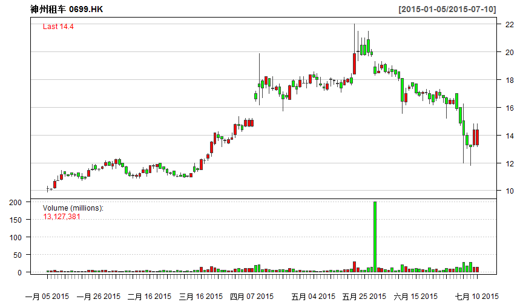

- Tel：5393093
- 微信：william_fang